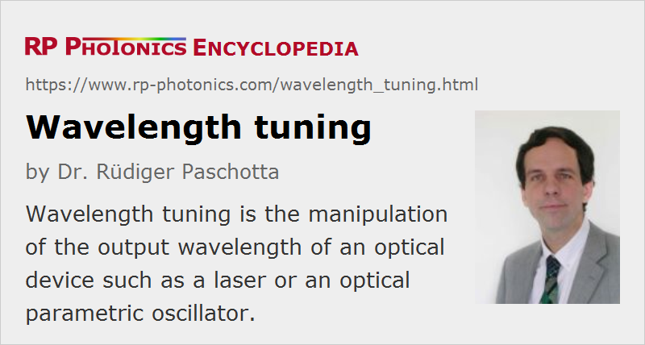

Wavelength Tuning
Definition: the manipulation of the output wavelength of an optical device such as a laser or an optical parametric oscillator
German: Wellenlängen-Einstellung
How to cite the article; suggest additional literature
Author: Dr. Rüdiger Paschotta
For some applications, it is required that the wavelength of a laser beam can be tuned within some range. Whereas the article on tunable lasers discusses various types of lasers which have an adjustable output wavelength, this article explains several methods of wavelength tuning.
Tuning via the Gain Medium
The first method is to influence the gain medium in such a way that the wavelength of maximum gain is changed, and the output wavelength adjusts accordingly (Figure 1). This method is often applied to lasers with operation on multiple resonator modes, where the “center of gravity” of the optical spectrum may be tuned fairly continuously. When the method is applied to single-frequency lasers, it usually leads to mode hopping.
Laser diodes are often tuned via the temperature, e.g. by changing the drive current of a thermoelectric cooler on which the laser diode is mounted, or the drive current of the laser diode itself. Typically, laser diodes tune by ≈ +0.3 nm/K, and the total tuning range achieved in that way may be a few nanometers wide. The resonator mode frequencies are also affected by the temperature change, but they react less strongly than the gain spectrum. In the case of single-frequency operation, continuous tuning over a wider range may be achieved if appropriate measures are taken to suppress mode hopping. For example, the resonator length may be tuned together with the drive current in the case of an external-cavity diode laser.
Tuning With an Intracavity Filter
The second method is to introduce a tunable optical filter into the laser resonator, which has a pronounced loss minimum at some adjustable wavelength (Figure 2). This makes it possible to influence the wavelength of maximum net gain, at which the laser is usually forced to operate. More precisely, the laser will usually operate on one or several resonator modes for which the inversion level of the gain medium required for lasing (i.e. for generating a gain which equals the resonator losses) is close to its minimum. In the steady state (for continuous-wave operation), light at the laser wavelength has zero round trip net gain, and all other wavelengths experience a negative net gain (assuming homogeneous broadening of the gain spectrum).
This method is often applied to solid-state lasers. A wide wavelength tuning range of a laser requires a wide gain bandwidth of the gain medium. Some broadband gain media such as Ti:sapphire and Cr:ZnSe allow tuning over hundreds of nanometers. The tuning range obtained is usually the wavelength range in which sufficient net gain can be achieved. Its limits are often set by the points where the emission cross sections become too low or the resonator losses become too high. In some cases, the tuning range may be smaller because there is excited-state absorption, or because emission at wavelengths with maximum laser gain can not be fully suppressed. In some fiber lasers, for example, the inversion level (and hence the gain at extreme wavelengths) is limited by amplified spontaneous emission near the wavelength of maximum gain.
Frequently used tuning elements in bulk laser resonators are:
- an etalon (Fabry–Pérot interferometer) or a birefringent tuner (Lyot filter) which can be rotated to adjust the wavelength of maximum transmission
- a prism pair in combination with a movable aperture
- a single prism in combination with and end mirror which can be tilted to adjust the wavelength for which the resonator is well aligned
- a volume Bragg grating used as a folding mirror with a variable angle of incidence
External-cavity diode lasers can also be tuned with an intracavity filter. A holographic diffraction grating can be used as an end mirror (Littrow configuration), which is rotated for tuning, or a fixed grating within the resonator combined with a movable end mirror (Littman configuration).
Tuning via the Resonator Length
A single-frequency laser can be tuned within approximately one free spectral range of its resonator by fine adjustment of the resonator length within a range of half a wavelength (for linear resonators) (Figure 4). The principle behind this is that the frequencies of the resonator modes are shifted. Attempts to tune further may cause the laser to mode hop to the next resonator mode, which then has the higher gain. A wider tuning range can be achieved if the wavelength of maximum gain is also tuned, or with an additional intracavity filter.
Relatively wideband mode-hop-free tunability can be obtained with very short laser cavities. This is used with, e.g., MEMS VCSELs, having a separate output coupling mirror the position of which can be tuned via thermal expansion, electrostatic forces, or a piezoelectric element.
Alternative Techniques
Wavelength-tunable radiation can also be obtained with alternative techniques:
- Synchrotron radiation sources (wigglers and undulators, free electron lasers) allow wavelength tuning via the electron energy.
- Optical parametric oscillators are often tuned by affecting the phase-matching conditions.
- An optical parametric amplifier can be used for amplifying a variable part of a very broad spectrum, as obtained via supercontinuum generation.
- The Raman self-frequency shift in an optical fiber can be exploited for wavelength tuning via the launched power of the pulses.
If a very fast periodic sweep of the optical frequency is required, an alternative method is available: short optical pulses are fed through a strongly dispersive element (e.g. a long fiber), so that the different wavelength components exit this element at different times.
Suppliers
The RP Photonics Buyer's Guide contains 13 suppliers for wavelength tuning devices.
Questions and Comments from Users
Here you can submit questions and comments. As far as they get accepted by the author, they will appear above this paragraph together with the author’s answer. The author will decide on acceptance based on certain criteria. Essentially, the issue must be of sufficiently broad interest.
Please do not enter personal data here; we would otherwise delete it soon. (See also our privacy declaration.) If you wish to receive personal feedback or consultancy from the author, please contact him e.g. via e-mail.
By submitting the information, you give your consent to the potential publication of your inputs on our website according to our rules. (If you later retract your consent, we will delete those inputs.) As your inputs are first reviewed by the author, they may be published with some delay.
See also: tunable lasers, distributed Bragg reflector lasers, optical filters, Lyot filters, birefringent tuners, interferometers, The Photonics Spotlight 2009-12-08
and other articles in the categories lasers, methods
|  |
If you like this page, please share the link with your friends and colleagues, e.g. via social media:
These sharing buttons are implemented in a privacy-friendly way!